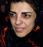

پذيرش > تریبون > مقالات > متن سخنراني پروين اردلان به هنگام دريافت جايزه اولاف پالمه


 متن سخنراني پروين اردلان به هنگام دريافت جايزه اولاف پالمه متن سخنراني پروين اردلان به هنگام دريافت جايزه اولاف پالمه
17 اسفند 1386 - - نسخه قابل چاپ
خانم ها و آقایان! سلام
بسیار خشنودم و سرافراز که از سوی نهاد معتبر و مستقل بنیاد اولاف پالمه کاندیدای دریافت این جایزه شده ام. این جایزه به اعتبار شخصيتی به من اهدا شده که عدالت خواهی شیوه زندگی اش بود و هزینه این عدالت خواهی وصلح و دوستی را با جانش پرداخت .از این رو به خوبی آگاهم که حال مسئولیت بزرگتری بر دوش دارم. باور دارم که اهدای این جایزه به من نه تنها به معنای ارج گذاشتن به تلاش های فردی زنان ايران بل خاصه ارج گذاری به فعالیت های جمعی و حق طلبانه جنبش زنان و دیگر جنبش های اجتماعی در ایران است. اين جایزه به خوبی نشان می دهد که کوشش های حق طلبانه زنان و مردان آزادی خواه و برابری طلب ایران با همه فرازو فرودها و همه بن بست ها و سنگلاخ های زن ستیزانه ای که برابر آن قد بر افراخته و می افرازد تاثیرگذار بوده . آری ! امروز صدای حق طلبی ما به گوش همه جهان رسیده است. در ضمن به خوبی واقفم که با دریافت این جایزه در معرض فشارها و اتهامات بیشتری قرار خواهم گرفت.
این جایزه را به همه زنان ايران ،مادرم، مادران فرزندان دربند، و ديگر مادران سرزمینم تقدیم می کنم که چگونه رنج کشیدن و در عین حال مقاومت در برابر تبعیض را به ما آموختند، تا چگونه اعتراض کردن را به فرزندانمان و نسل هایی که در پی می آیند بیاموزیم.
آرزو داشتم در این روز بزرگ که مصادف است با صدمین سالگرد روز جهانی زن و یادآور مبارزات حق طلبانه زنان در سراسر دنیا، در میان شما باشم . اما در آخرین لحظات قبل از پرواز سوی دادستانی ایران ممنوع الخروج و از این دیدار محروم شدم. این اتفاق اما چندان غریب نیست چرا که در دیار من، زن بودن و ندای حق طلبی سر دادن یعنی محرومیت و مبارزه ای مداوم. افتخار می کنم که زنی سکولار و متعلق به جنبشی فمینیستی هستم که پیشینه 100 سال مبارزه ومقاومت برای احقاق حقوق زنان را دارد. بیش از صد سال است که ما نیز هم چون بسياری خواهرانمان در سراسر دنیا برای دستیابی به بدیهی ترین حقوق خود چون حق انتخاب در زندگی فردی و اجتماعی و از جمله حق انتخاب پوشش تلاش کرده ایم. اما هر بار قربانی سیاست دولت های ایدئولوژیک شده ایم. به ویژه طی سه دهه پس از انقلاب "اسلامی" بسیاری از دستاوردهای زنان پیشکسوت ما قربانی این سیاست ها شد : قوانینی چون قانون حمايت خانواده لغو شد و آزادی در انتخاب پوشش به اجبار در نوع پوشش تبدیل شد و به قالب قانون در آمد.
اکنون بیش از سه دهه است که برای کسب حق طلاق و برابری در ازدواج تلاش کرده ایم، گفته ایم داشتن این حق برای مرد که بیش از یک زن داشته باشد تحقیر مضاعف زن است، اما این قانون مردانه همچنان به قوت خود باقی مانده است. سال هاست که می گوییم چرا هنگام بروز یک حادثه و یا تصادف زن بودن و مرد بودن در تعیین میزان خسارت موثر است و دیه زن نصف دیه مرد است؟ می پرسیم چرا در قوانین ما «مرد بودن» معيار واحد انسانی به شمار می آید و سهم ما زنان نسبت به این واحد، یک دوم و در مواردی حتی کمتر نیز است.
می گوییم در جامعه ما درصد بالای تحصیل زنان و تلاش روزمره آنان برای حضور در حوزه های اجتماعی، سیاسی و فرهنگی گواهی می دهد فرهنگ بسی پيش تر از قانون است و نشان می دهد که نمی توان همچنان در قانون عقب تر از فرهنگ ماند. می پرسیم اگر ایران به کنوانسیون بین المللی مدنی و سیاسی و کنوانسیون های بین المللی اقتصادی و اجتماعی پیوسته و پس می باید متعهد به اجرای آنها باشد، پس چرا متعهد نیست؟ می پرسیم اگر طبق این کنوانسیون ها هر نوع تبعیض از جمله تبعیض بر اساس جنسیت ممنوع است چرا قوانین ما چنین تعهداتی را در بر ندارند ، مثلا چرا برای پذیرش زنان در دانشگاه سهمیه جنسیتی قائل می شوند؟
سال هاست از بالابردن سن کیفری در قانون می گوییم اما همچنان با کودکان دختر و پسربالای 9 سال و 15 سال که مرتکب جرم وخطا می شوند مانند بزرگسال رفتار می شود و تنها تخفيف قائل شده اين است که اجرای حکم اعدام محکوم شدگاه به 18 سالگی موکول می شود . ما در عین ابراز مخالفت با اعدام می پرسیم چرا به اعدام «کودکان بزرگسال شده» پایان نمی دهید؟
سال هاست بسیاری زنان ایرانی در جامعه ما به خاطر ازدواج با مردان افغانی یا عراقی با دشواری فراوان رو به رو هستند چون بر اساس قانون ،تابعیت مادر ایرانی، فرزند او را تبعه ایران نمی کند و ما می پرسیم چرا؟
سال هاست ، در جامعه ای که قانون آن به دفاع از سنت های زن ستیز بر می آید، از پایان دادن به خشونت های ناموسی و سنگسار می گوییم اما همچنان قتلهای ناموسی و سنگسار قربانی می گیرد . حال دیگر اين جنايات جزو فرهنگ و سنت آن جامعه نیست بلکه نمودار خشونتی است که زیر سایه قانون هر روز پروارتر و قدرتمندترنیز می شود.
هم اکنون دختران و پسران بسیاری در خیابان ها و میادین شهر، به خاطر نوع پوشش شان توسط ماموران پلیس تحت عنوان طرح امنیت اجتماعی مورد بازداشت و توبیخ قرار می گیرند .
جنبش های اجتماعی درایران از جمله جنبش های دانشجویی و کارگری و معلمان با طرح خواسته های آزادی خواهانه وعدالت طلبانه خود صداهای گوناگون مدنی در جامعه ما هستند. اما در حال حاضر بسیار از فعالان این جنبش ها در زندان بسر می برند و جلوگيری از ارتباط گسترده بین این جنبش ها بایکدیگر و سرکوب آنها رو به افزونی است .
ما فعالان جنبش زنان به روش های گوناگون مدنی، نقش و تاثیر قوانین تبعیض آمیزرا در زندگی مان نشان می دهیم . با نقد و اعتراض به قوانین خشونت آمیز، خواهان تغییر آنها می شویم. در برابر این اعتراض از سوی حاکمیت محکوم به اقدام علیه امنیت ملی و تبلیغ علیه نظام می شویم. اما هیچ وقت به این پرسش پاسخی داده نمی شود که اگر ما فعالان مدنی و فعالان جنبش زنان یا شهروندان این جامعه برهم زننده امنیت ملی یا امنیت اجتماعی هستیم ، مدعیان حفظ امنیت مدنی جامعه چه کسانی هستند؟
با همه فشارها، تلاش کرده ایم برای تحقق خواسته های حقوق بشر ی وانسانی خود عمل کنیم. کوشیده ایم با بررسی تجربه گذشتگان و تقویت حافظه تاریخی مان،با بهره گیری از تجربیات مبارزاتی فمینیست های پپشکسوت مان در ایران و درجهان،با درس گيری از دستاوردها و شکست های آنها، با آموختن از تلاش های تئوریک و آگاهی بخش آنها در خارج از کشور وتبعید و به مدد تجربه عملی روزمره مان، نه تنها بر غنای نظریمان بیافزاییم که ظرفيت مان را نيز در شنیدن صداها و دريافت دیدگاه های متفاوت و متنوع افزون کنيم. بدين سان کوشيده ايم روش های مبتکرانه را در گشایش عرصه برای مبارزات حق طلبانه زنان و تغییر موقعیت نابرابر آنان در قانون به کار بندیم.
یکی از این تمهیدات بهره گیری از تجربیات خواهرانمان در کشورهای منطقه و تبادل اطلاعات و و انتقال این تجربیات به یکدیگر است. این امر قدرت جنبش زنان در سطح منطقه و فراتر از آن در سطح جهانی افزون می کند و جنبش های زنان در داخل کشورها را زير چتر حمایتی شبکه های جهانی زنان قرار می دهد و به رشد آنان مدد می رساند. کمپین یک میلیون امضا برای تغییر قوانین تبعیض آمیز یکی از روش های خلاق جنبش زنان در ایران است که با الهام از فعالیت خواهرانمان درمراکش پی گرفته شده است. حرکتی را که آنان با حمایت دولت شان برای تغییر قوانین به ثمر رساندند ما از پایین و از طریق جمع آوری امضا و با اتکا به گفت و گوی "چهره به چهره" با زنان و مردان برای عمومی کردن مطالبات حقوقی مان پیش گرفته ایم تا با ارائه امضاها به نهاد های قانونگذاری و طرح خواسته یک میلیون نفر مبارزه برای تغییر قوانین تبعيض آميز جنسيتی را گسترش دهیم.
اکنون پس از یک سال و نیم، که آغاز به کار این جنبش می گذرد گرچه نتوانسته ایم به تغيير اين قوانين دست يابيم اما توانسته ایم با گسترش آگاهی، ایجاد بحث و کاربست شیوه گفتگو های خلاق و دمکراتیک ، گفتمان برابری حقوقی را در لایه های مختلف جامعه و حتی در سطح نهادهای رسمی قدرت مطرح کنيم و آنها را به واکنش یا پاسخ وابداریم . در این فرایند کوشيده ايم به دمکراتیزه کردن جامعه مدنی بپردازیم زیرا بر این باوریم که توجه به حقوق زنان پیش شرط دموکراسی است و نمی توان به بهانه حاشیه ای بودن مسائل زنان در مبارزه برای دمکراسی خواهی حقوق آنان را قربانی کرد . به اعتقاد ما مسیر دموکراسی خواهی از احقاق حقوق زنان می گذرد.
اکنون در عرصه جهان، بسیاری ، کمپین یک میلیون امضا را با خواسته های مشخص و عينی اش، با روش مسالمت آمیزش یعنی جمع آوری امضا، با هزینه پردازی کنشگران و وکلای مدافع اش که به رایگان وکالت این این فعالان را برعهده می گیرند می شناسند. تا کنون بیش از 50 نفر از فعالان کمپین شامل زنان و مردان برابری خواه در تهران و شهرستان ها که غالبا متعلق به نسل جوان ما هستند حین جمع آوری امضا در فضای عمومی نظير مترو و پارک و دیگر مکان های تجمعات زنان یا هنگام برگزاری کارگاه های آموزش حقوق زن و یا فعالیت نوشتاری در وب سایت این کمپین ( تغییر برای برابری )بازداشت ، یا دادگاهی و یا تهدید به بازداشت شده اند . هم اکنون دو نفر از فعالان حقوق زن همچنان در زندان بسر می برند.
در دل همین حرکت، مادران اعضای کمپین نیز فعال شده اندتا با حمایت از فرزندان بازداشت شده خود و پی گیری وضعیت و خواسته های آنها در این مقاومت مدنی حامی و همراه شان باشند. ورود مادرها ، پدرها و ديگر افرادخانواده به جنبش های برابر ی خواهانه و صلح جویانه شعاع این حرکات را گسترده تر کرده و ارتباط بین جنبش ها ی متفاوت را افزایش داده است. اکنون بسیاری از فعالان جنبش های دانشجویی و کارگری همچنان در زندان هستند و خانواده های آنان اعضای فعال این جنبش ها محسوب می شوند.
امروز آوازه کمپین " تغيير برای برابری" نه تنها با کوشش کنشگران آن در داخل که به مدد حامیان این کمپین و شبکه های جهانی فمينيست ها و مدافعان ايرانی حقوق بشر و نيز فعالان غير ايرانی،مرز های جغرافیایی را پیموده است. فعالیت های مجدانه افراد و سازمان ها ونها دهای حقوق بشری و فمينيستی و نيز رسانه های خبری در پی گیری وضعیت فعالان جنبش زنان در ایران و انعکاس خواسته ها و تلاش آنها در محافل بین المللی ستودنی است . به راستی می توان گفت که اگر ما زنان ايران با تکيه به واقعیت های عینی و ملموس سیاسی و اجتماعی جامعه مان به در افکندن طرحی برای بيان اولویت ها و خواسته هایمان قادر شده ايم ، این خواسته ها با تلاش فعالان جنبش هاو نهادهای حقوق بشری در سراسر دنیا دنبال شده و هر چه بيشتر بازتاب يافته . درواقع تداوم جنبش ما در گرو کوشش جمعی حق طلبان داخلی و بین المللی بوده و هست .
جنبش برابری خواهانه در ایران ، امرو ز به یمن اين ارتباط و اين مشارکت فعالانه تداوم دارد و هم این هر روز به ما قدرتی افزون تر می دهد. و البته مخالفت نیروهای زن ستیرو عدالت ستیز را نیز در تقابل با ما گسترده تر می کند.
اما جه باک ! فعالیت مسالمت آمیزی که به آن ایمان داریم مقاومت مدنی مان را افزایش داده است . و اين واقعيت مداوما به ما نیرو می بخشد : نيروئی که در زندگی روزمره ما جاری ست ، زاياست و خلاق است و شور آفرین است و قدرت بخش . و به جان پاسش می داریم .
متشکرم.
متن سخنراني را از اينجا بشنويد
لينک هاي مرتبط
زنانه ها
راديو ميهن
گويا نيوز
بازتاب خبر در رسانه هاي سوئدي
(دريافت جايزه اولاف پالمه توسط خواهر پروين اردلان) /DN-NYHETER
گزارشي پيرامون جايزه اولاف پالمه و پروين اردلان /DN-NYHETER
گزارشي از مراسم اهداي جايزه اولاف پالمه/SVD
ارسال به
بالاترین
،
توییتر
،
فریندفید
،
فیسبوک
در همين بخش :
 دهمین دورۀ مراسم تندیس صدیقه دولت آبادی ۱۳۹۲ دهمین دورۀ مراسم تندیس صدیقه دولت آبادی ۱۳۹۲
کارت پستالهایی به بهانهی هشت مارس و به یاد همهی مبارزین راه برابری
بیانیه بیش از 350 تن از مدافعان حقوق زنان به مناسبت روز جهانی زن؛ زنان هر روز فرودستتر میشوند
لباسی که برای تن ما دوخته اند! /اعظم بهرامی
چالشها و چشمانداز فعالیت مدنی زنان
ديگر بخش ها :
طرح یک میلیون امضا
|
مقالات
|
سایت نوشته ها
|
اخبار
|
گزارش كمپين
|
گفت و گو
|
علیه سکوت
|
كوچه به كوچه
|
نامه های شما
|
گزارش ویژه
|
گفتگو با اعضا
|
ویژه سالگرد کمپین
|
تصویر برابری
|
دل آرام علی
|
تریبون
|
مقالات
|
تاریخ شفاهی
|
خارج از چارچوب
|
کتابخانه
|
درباره کمپین
|
کمپین در شهرها
|
کمپین در بند
|
صدای تغییر
|
ویژه 22 خرداد
|
لایحه حمایت از خانواده
|
گالری
|
عشا مومنی
|
امیر یعقوبعلی
|
خدیجه مقدم
|
راحله عسگری زاده و نسیم خسروی
|
پروین اردلان،جلوه جواهری، مریم حسین خواه، ناهید کشاورز
|
زینب پیغمبرزاده
|
سعیده امین، سارا ایمانیان، محبوبه حسین زاده، ناهید کشاورز و همایون نامی
|
احترام شادفر
|
نسیم سرابندی زاده،فاطمه دهدشتی
|
وبلاگ مهمان
|
پرونده خرم آباد
|
دستگیری ها
|
مریم مالک
|
پرستو اللهیاری
|
مهرنوش اعتمادی
|
سمیه رشیدی
|
Other Languages
|
همراهان
|
«فراخوان کمپین ده روز با بهاره هدایت»
| English
|